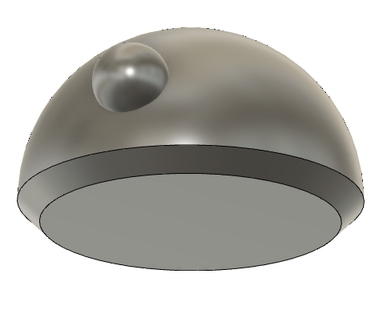
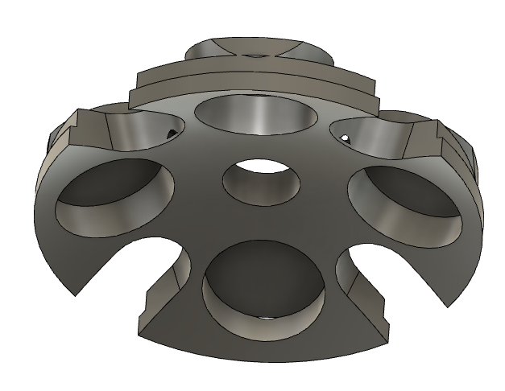

Robotics Club
Every year, the projects the Robotics Club works on come strictly from the desires of the students in the club. Anyone can propose a project idea and if it is approved by the club mentor, the club will purchase the materials and provide lab space.
Autonomous Chess Playing Robot Arm
The goal was to build a vision controlled robot arm that could play chess against
a human opponent autonomously.
This project ran for three years of the club. I was involved in the last two
years and picked up from where the first year team left off.
The project initiators had selected HerkuleX smart servos for their motors.
These servos have on-board circiutry that allow them to read their position and temperature.
This eliminates one issue with standard servos in that you can turn them on from a power-off condition
and know what position they are in. Standard servos require you to move them to a known position before
working with them and that causes a jerking motion when they are first turned on since they could be at
an angle very far from your start point and when they move to home, they do so as fast as they are able.
The HerkuleX servos also advertise high-torque capabilities that made them highly desirable. The documentation
available for them was lacking and mostly in a foreign language so it took me two weeks to figure out how to
use them with an Arduino microcontroller but once that issue was resolved, they were very easy to work with.
The Robotics Club at WSU is fantastic for helping students to learn the skills they need for their projects
and in my first year, PhD student Gabriel de la Cruz gave a presentation on using OpenCV which I used to help
incorporate vision into this project.
I was able to get a basic arm with two degrees of motion to track on object from a laptop camera and move
the arm end effector to follow it.
This was what I accomplished in my first year:
In my second year, I started focusing on building a system that could recognize the chess pieces.
This was before I learned about convolutional neural networks so I was using a simpler method of taking a photo of
each piece, storing them, and then comparing each frame of the camera to the set of stored images and if the image in frame was
greater than 70% similar to a stored image, that was most likely the piece. This method worked OK but
there was room for improvement.
I mapped out the positions on the chess board and stored them as arrays of servo positions. I was working
on a method of subtraction of current position to desired position to move the arm from one position to another.
This was before I had learned about concepts like Denavit-Hartenberg parameters and forward and reverse kinematics.
I also purchased a kit robot arm
for myself from eLAB PEERS
so that I didn't have to spend any more time on designing the hardware
which was something that took up a lot of time in the first year. This arm uses the standard servos instead of the
smart servos but the trade-off of having all of the components designed and built already was acceptable.
The project didn't continue in the following years due to lack of interest.
That is unfortunate as the club purchased an
even better new robot arm
from Trossen Robotics that also uses smart servos.
Mind Controlled Prosthetic Hand
The goal for this project is to develop a Prosthetic hand that can respond to a user's thoughts.
The team that began this project was comprised of mostly bio-engineering students.
In the first year of the project that I was not involved in, the team had 3d printed a hand from a model
found online. They had purchased a chipKIT uC32
microcontroller, Portescap Brushless Motors,
and an OpenBCI Cyton board with sensors.
They did meet with some success in controlling the hand manually but did not make much progress on learning to use the brain-control interface device.
In the projects second year, I helped out with getting the motors to work and with setting up the OpenBCI software.
The second year team had trouble getting the hand to work consistently. It was very intermittent and the movement was often sporadic as it would
sometimes move slow then really fast. They suspected the problem was with the motors since they had purchased them used.
I looked up the model number on the motors and found that they were actually rated for 12v and the team had been using 5v. When I replaced the motor
power supply with 12v, they began functioning perfectly.
Unfortunately, the year one circuitry had been scavenged by another team for another project
so I replaced the chipKIT microcontroller with an Arduino Uno. I used H-Bridge Motor Driver's for the motor controllers. I wired motors from all five fingers,
connected them to push buttons and verified that everything was working properly.
I contacted OpenBCI and got access to the 3d printer files for the plastic helmet to house the sensors and had it printed in the FIZ with the Stratysis printers.
It was a 24 hour print and the cost to the club was $170.
I investigated the OpenBCI open source software and installed in on a lab computer and after resolving some UTF encoding issues, I worked out how to
get the raw sensor signals to write to text files so they could be used by a machine learning algorithm to try to learn the brain signals that would correspond
to the desired hand movements. We gathered data for two hours from five users by having them wear the headset and simply open and close their hands. This was
again before I had learned how to do machine learning so I had not yet set up the ability to label the data. Other team members began working on implementing a
neural network but they became busy with their school work and did not make progress on this.
BB-8
Usually, projects are proposed by current club members. This time, the outgoing club President, Austin Bonnes, said he really wanted to do a BB-8. I loved the idea
and decided to start it on my own over the summer.
I saw a youtube video of a teenager building his own life-sized version and used that as my guide.
I used an exercise ball as the template and spent a week doing the paper mache. I would put on a layer each evening. By the time I decided I had enough, it ended up being ~0.25" thick.
-
I was surprised by how well the paper mache held up, although, it did warp somewhat which caused some problems. I used a hand saw to cut the piece into two halves and sealed it with a water-proof, spray-on rubber, painted the whole thing white, then painted the orange decorations on it. I purchased some pre-fab aluminum pieces to construct the inner robot that would control the movement and picked up a plastic salad bowl to serve as a make-shift head. I cut a rubber ball in half to stand in for the eye.

To join the two halves, we initially tried using an aluminum band on the inside perimeter. We glued it to one half and drilled and tapped it and drilled complementary mounting holes the other half to put bolts through.
This held the two halves together well but it had a large lip that prevented the inner-bot from being able to move freely and in order to allow it
to be able to spin through the entire inside, we had to shorten it which meant that the magnets we intended to hold the head on were much farther away, reducing their effectiveness.
We did get it to work by using a putty to create ramps around the lips:
To improve on this, I 3d printed a replacement ring that matched the contours of the shells and that eliminated the lip problem, the bot could now move more freely through the entire sphere:
We still had the problem that even the 3d printed, contoured ring required us to shorten the bot so we still had the magnet distance problem. I decided it was time to call this a
successful proof-of-concept and move to a more well-designed body. I designed a new body in Fusion 360:
View parts on Thingiverse
 
I divided everything into small pieces that I could print on my Prusa MK2 3d printer at home. The entire job took about 350 hours of printing and would have cost a lot to have printed in the FIZ. By doing it at home, I only charged the club for the price of the filament. I went through two and a half, 1kg spools of ABS plastic at $20/spool. We used epoxy to glue all the pieces together:

This produced a much smoother, more uniform body. It eliminated the warping issues we had with paper mache.
I included the mounting holes in the design with overlapping, flush flanges so the inside was smooth with no raised areas.
This was where the school year ended and the work on this project stopped. I was now about to begin my senior year and needed to devote all the time I had spent with the
Robotics Club to my Senior Design Project.
I do plan to renew construction on this at home and build this for myself, as well as a life-sized R2-D2.
Mars Rover


The goal of the WSU Mars Rover Project is to build a rover capable of competing in the University Rover Challenge.
This challenge has specific requirements that must be met and change somewhat from year to year. The project had already been in development for one year when I joined.
The previous year's team had built a frame with Bosch tubing. They used the WSU Machine Shop to machine solid aluminum bars into a rocker-bogie suspension system. They
machined aluminum pipes into contoured wheels that had a slight rounding. They used a water jet to cut out aluminum wheel hubs. They had also used the water jet to cut out
triangle patterns from aluminum sheets to build a light-weight arm that they were planning to use servos to manipulate. They 3d printed a sample scoop to attach to the arm.
There was a lot of mechanical work done on the project but no electrical or code work. They had purchased motors for the wheels and I began work with them. They were 12V
motors. The previous team had purchased three, 6V, lead acid batteries that they were planning to use to power the entire rover. I purchased a 12V Voltage regulator to
step the voltage down from the three batteries in series and purchased Sabertooth Motor controllers to control them.

One of the requirements of the URC is that the rover must be controlled remotely, in Utah, from our home campus, in Washington. Our plan was to use the internet to achieve this. I setup a control station on a laptop with an open source webcam monitoring program running on Linux to be able to view the rover's camera data locally. I then set up an Apache server to read commands from the control station and transmit them via internet to a program running on an onboard Raspberry Pi that would send control signals to the Arduino microcontroller to control the rover. We tested this system multiple times by controlling the rover from a different room and it worked well (video). I implemented an interim electrical system to control the rover and we decided to replace the lead acid batteries with lithium polymer. I designed the first rudimentary electrical plan:

This system worked OK but the wheels weren't moving very fast and didn't have enough power to get the rover moving from a dead stop. It needed a nudge to get going. I suspected
that the weight of the full system was too much for our motors but, one day, as I was testing it, a Master's student that works in the Robotics Lab was talking with me about the
project. His undergrad is in Electrical Engineering and he looked my wiring over and asked my how much current I was expecting at each motor. I told him and he said that it
looked to him like the wires I was using were too thin and he recommended I go to a lower gauge (lower wire gauge = thicker wire). I did a quick Google search for the proper
AWG wire for my current needs and swapped all high power wires with the proper gauge. When I tried testing it again, the difference was night and day. The motors were able to
move so fast that the aluminum wheels were breaking free of the low friction concrete floor. Problem solved, thank you very much James Irwin!
This was everything I was able to accomplish my first year working on the rover.
In my second year working on the rover, a Mechanical Engineering student in the club got approval to use the rover as his teams Senior Design project. They worked on completely
redesigning all of the mechanical parts. They designed a new body, a new suspension system, and a new arm. They also built everything. The new rover was larger and was designed
with the internals in mind so there was more room for electronics.
The electrical and code needs were the same for the wheels but the new arm used 12V linear actuators instead of 5V servos so I wrote new code and ran new wires to handle them.
I tested everything and verified it was working.
This was all of the work I was able to do on the project this year. I was serving as President of the Robotics Club and was busy with administrative duties.